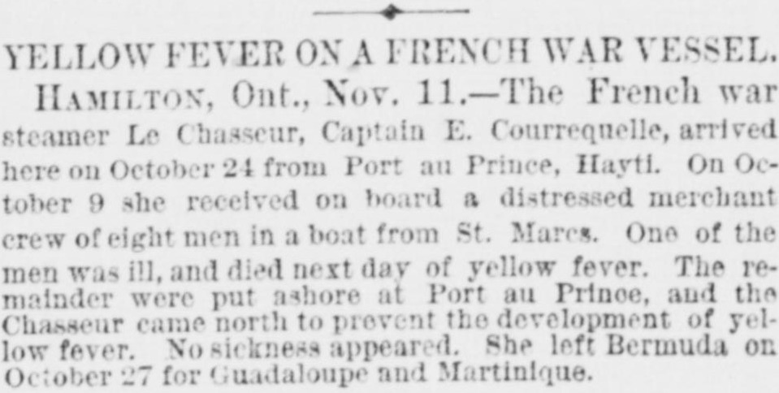
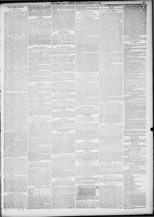

See the full pageVer la página completaYellow Fever on a French War Vessel.Fiebre amarilla en un buque de guerra francés.
A Hamilton, Ontario, dispatch of November 11 reports that the French war steamer Le Chasseur, Captain E. Courrequelle, arrived there on October 24 from Port au Prince, Hayti. On October 9 she had received on board, in a boat from St. Marcs, a distressed merchant crew of eight men; one of the men was ill and died the next day of yellow fever. The remainder were put ashore at Port au Prince, and the Chasseur came north to prevent the development of yellow fever; no sickness appeared. She left Bermuda on October 27 for Guadaloupe and Martinique.Un despacho de Hamilton, Ontario, del 11 de noviembre, informa que el vapor de guerra francés Le Chasseur, al mando del capitán E. Courrequelle, llegó allí el 24 de octubre procedente de Puerto Príncipe, Haití. El 9 de octubre había recibido a bordo, en un bote procedente de St. Marcs, a una tripulación mercante en peligro de ocho hombres; uno de ellos estaba enfermo y murió al día siguiente de fiebre amarilla. El resto fue desembarcado en Puerto Príncipe, y el Chasseur se dirigió al norte para prevenir el desarrollo de la fiebre amarilla; no apareció enfermedad alguna. Salió de Bermuda el 27 de octubre hacia Guadalupe y Martinica.
FULL TEXT:TRADUCCIÓN:
YELLOW FEVER ON A FRENCH WAR VESSEL.FIEBRE AMARILLA EN UN BUQUE DE GUERRA FRANCÉS.
HAMILTON, Ont., Nov. 11.—The French war steamer Le Chasseur, Captain E. Courrequelle, arrived here on October 24 from Port au Prince, Hayti. On October 9 she received on board a distressed merchant crew of eight men in a boat from St. Marcs. One of the men was ill, and died next day of yellow fever. The remainder were put ashore at Port au Prince, and the Chasseur came north to prevent the development of yellow fever. No sickness appeared. She left Bermuda on October 27 for Guadaloupe and Martinique.HAMILTON, Ontario, 11 de noviembre.—El vapor de guerra francés Le Chasseur, capitán E. Courrequelle, llegó aquí el 24 de octubre procedente de Puerto Príncipe, Haití. El 9 de octubre recibió a bordo una tripulación mercante en peligro de ocho hombres en un bote desde St. Marcs. Uno de los hombres estaba enfermo, y murió al día siguiente de fiebre amarilla. El resto fue puesto en tierra en Puerto Príncipe, y el Chasseur vino al norte para prevenir el desarrollo de la fiebre amarilla. No apareció enfermedad alguna. Salió de Bermuda el 27 de octubre para Guadalupe y Martinica.
New-York Tribune. New York, November 12, 1883.
See the original at the Library of CongressVer el original en la Biblioteca del Congreso
Published by: New York Tribune, 1866-1924.Publicado por: New York Tribune, 1866-1924.
Edition: Edition 1Edición: edición 1
Page: 5Página: 5
Frequency: daily (1866–1924)Frecuencia: diario (1866–1924)
Collection: Chronicling America, Library of CongressColección: Chronicling America, de la Biblioteca del Congreso
LCCN: sn83030214LCCN: sn83030214
ISSN: 1941-0646ISSN: 1941-0646
OCLC: 9405688OCLC: 9405688
Rights: public domain, according to the Library of CongressDerechos: dominio público, según la Biblioteca del Congreso